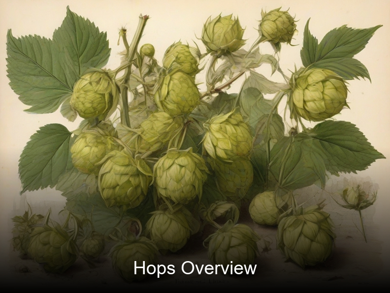
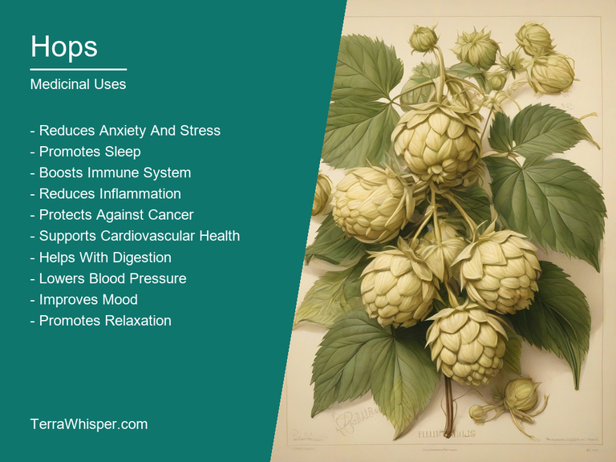
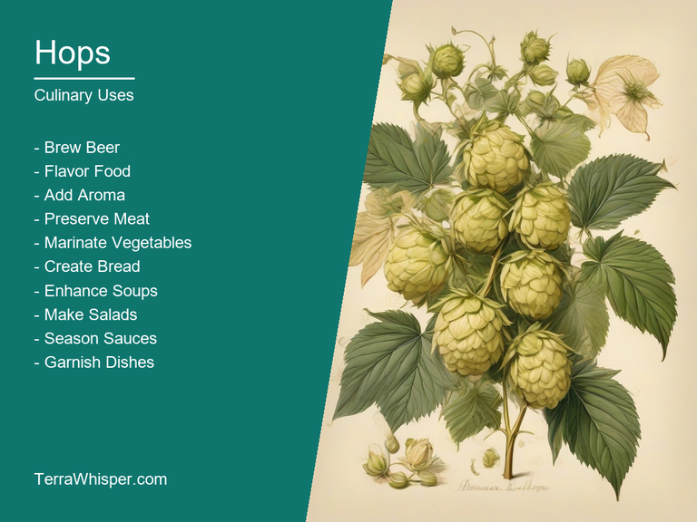
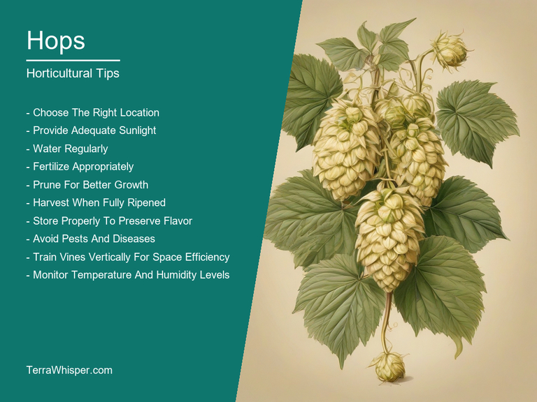
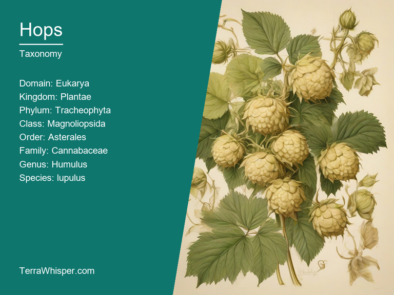
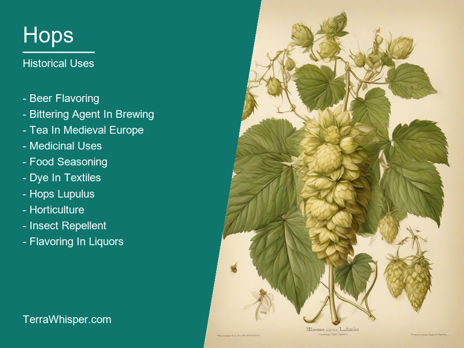

Hops, scientifically known as Humulus lupulus, is a versatile perennial climbing vine that has been used for both medicinal and culinary purposes since ancient times. It is native to Europe, Western Asia, and parts of North Africa but can now be found in various regions around the world due to its widespread cultivation.
The medicinal uses of hops have long been documented in traditional medicine systems. They contain flavonoids, polyphenols, and other phytochemicals which give it anti-inflammatory, analgesic, sedative, antibacterial, and antioxidant properties. These characteristics make hops an effective remedy for various ailments, including anxiety, insomnia, digestive issues, muscle tension, and even certain types of skin conditions. Additionally, some people find hops to be a great alternative to over-the-counter medications for pain relief and sleep aid.
In culinary contexts, the dried flowers and fruit of hops are used as a flavoring agent in beer production due to their bitter taste. This bitterness is essential in balancing out the sweetness from malted barley. Beer brewers have been incorporating hops into their recipes for centuries, making them an important ingredient in the history and evolution of modern-day breweries around the world.
Hops also has ornamental applications. Its attractive, leafy vines can grow up to 20 feet long, providing a natural climbing structure for trellises and arbors. The small flowers on its branches give off a pleasant aroma, making them an appealing addition to gardens. Additionally, hops are known for their hardiness and ability to thrive in various soil conditions, making them a low-maintenance plant option that adds visual interest to any landscape.
Historically, hops have played a significant role in society. The ancient Greeks used it as a medicinal herb while the Romans introduced its culinary uses in their beverages. By the Middle Ages, Europeans started to produce hops for beer brewing, and it became an essential ingredient for modernizing this drink in a number of ways. Today, Humulus lupulus remains important across multiple industries, including medicine, food, and botanical science.
In this article, you will discover what are the medicinal and culinary uses of hops. Then, you'll learn how to cultivate it, what is its botanical profile, and how it was used historically.
Hops (Humulus lupulus) has many health benefits, such as relief for sleep disorders like insomnia and improving relaxation due to its sedative properties. It can also aid in digestion by easing issues with indigestion, bloating, and flatulence. Furthermore, hops are known to have antioxidant and anti-inflammatory properties, which may contribute to preventing or delaying age-related deterioration in cognitive functions, memory, and motor skills. Hops has shown potential for relieving anxiety, menopausal symptoms like hot flashes, and reducing stress levels.
The following illustration lists the most important uses of hops in medicine.

Medicinal constituents of hops include flavonoids and lignans, which contribute to its sedative, anti-inflammatory, and antioxidant properties. One primary example is xanthohumol, a potent antioxidant found in the plant, contributing to its health benefits. Hops also contain essential oils, including myrcene, humulene, and linalool, which give it a characteristic fragrance and provide additional medicinal effects such as reducing pain, inflammation, and promoting relaxation.
The most commonly used parts for preparation are the flowers or cones of hops plants, also known as strobiles. These can be consumed directly as a tea or infusion, where their soothing properties are maximized. Additionally, hop cones can be brewed into beer, which is often associated with health benefits when moderately consumed. Other preparations involve encapsulated pills containing dried hops or blending with other herbal formulas, particularly to manage mood and stress-related issues.
While the consumption of hops has generally been well tolerated without causing significant side effects, some individuals may experience mild discomfort such as nausea, headache, or dizziness. Hops may also interact with certain medications, including those used for sleep disorders, anxiety, and blood-thinning agents, making it important to consult with a healthcare professional before incorporating hops into one's treatment regimen.
To ensure safe usage of hops, it is crucial to follow recommended dosage guidelines and avoid exceeding them, especially if other supplements or medications are already being taken. Additionally, pregnant women should exercise caution when using hops due to its potential interaction with pregnancy hormones. Consultation with a healthcare professional can help determine the appropriate approach in managing specific health issues or assess potential interactions before adopting a regimen that incorporates hops.
Hops, scientifically known as Humulus lupulus, are versatile plants that offer various culinary uses. This perennial vine is primarily grown for its flower cones known as 'hops cones,' which contain a range of flavorful compounds and oils. These hops' use in the food industry can be traced back to ancient times when they were used as seasonings, spices and brewing ingredients.
The following illustration lists the most common uses of hops for culinary purposes.

Hops have a unique flavor profile due to the presence of volatile organic compounds like myrcene, humulones and lupulones. These compounds create earthy, floral, spicy and pine notes in hops-infused dishes. Their robust characteristics lend themselves well to various culinary applications such as salads, soups, sauces, and more elaborate meals like fish dishes. They can also be used as garnishments for cocktails or beer.
The edible parts of hops primarily include the flower cones or hops flowers, which are used widely for flavoring purposes. The cones consist of the delicate pistil and resinous green buds covered with soft white powder. These hops cones contain a range of essential oils, which give them their characteristic flavor profile when brewed or incorporated into food.
When it comes to cooking, there are several culinary tips to keep in mind when using hops in recipes. Firstly, since the hop's bitterness is relatively low compared to other herbs and spices like ginger or pepper, you may need to use more hops than expected to achieve the desired taste. Additionally, hops tend to lose their potency quickly upon cooking. To maintain its full flavor, consider adding hops during the final stages of cooking. Lastly, hops have a high water content and should be stored in a cool, dry place away from direct sunlight and excessive heat to prevent spoilage.
Though there is no evidence suggesting toxicity or side effects from consuming hops in culinary uses, it's worth mentioning that some people might experience allergic reactions due to the plant's pollen or other components. As a precautionary measure, if you are concerned about possible sensitivities or have specific health concerns, it's advisable to consult your doctor before incorporating hops into your diet.
Hops (Humulus lupulus) is a flowering vine native to Europe, western Asia, and North America with specific requirements for growth. To thrive, it needs a climate with warm summers, mild winters, and well-drained soil with plenty of organic matter. It also requires adequate sunlight, approximately 6 to 8 hours per day.
The following illustration lists the most important tips to cutlitvate hops.

Planting hops is similar to starting any other vine. Choose a suitable location that meets the requirements, prepare the ground by removing weeds, rocks, or unwanted debris. The best time for planting is in early spring when there are longer days and soil temperatures rise. Dig a hole twice as large as the root ball of the hops cuttings to create good drainage. Place the cutting into the hole, making sure that it's at the same depth as it was previously growing. The best spacing for plants is between 2 and 4 meters apart, allowing enough room for growth and harvesting later on.
The post-plantation stage requires proper care to ensure healthy growth. Watering at appropriate frequencies is crucial, especially during dry spells in summer months, without waterlogging the soil. Fertilize once or twice a year using balanced fertilizers to maintain optimal nutrient levels for vigorous growth. Prune hops once a year to encourage new growth and keep the plant healthy.
Harvesting hops involves careful timing and technique to preserve its quality. The ideal time to harvest is during mid-to-late August when the flowers are ripe and have turned from green to yellow or brownish, while the leaves start turning brown. Cut the hop bines near the base using a sharp knife or pruners. Remove excess leaves and flowers to make it easier to process and store. If stored properly in a cool, dry location with low humidity levels, hops can be preserved for up to two years.
While generally considered hardy plants, hops are susceptible to several pests and diseases. Powdery mildew is the most common fungal disease that affects hops. Regularly inspect your plants for signs of powdery white growth on leaves and branches and remove affected parts as soon as possible. Pests like aphids, spider mites, and caterpillars can also cause damage to hops. Keep an eye out for any infestations and treat them promptly using pesticides if necessary. With proper management of these factors, hops cultivation is quite fruitful with good yields.
Hops, with botanical name Humulus lupulus, belongs to the domain Eukarya, kingdom Plantae, phylum Spermatophyta, class Magnoliopsida, order Rosales, family Cannabaceae, genus Humulus, and species lupulus. Common names for Hops include "Hop plant," "Humulus," and "Brewer's gold."
The following illustration display the botanical profile of hops.

Variants of Hops have different characteristics that make them distinct from one another. The most common variants are Hallertauer, Hersbrucker, Tettnanger, and Spalt. Each variant has specific uses and traits based on its chemical composition.
Morphologically, Hops are climbing plants with a woody core that produces flowers called strobiles. These flowers consist of cones containing seeds surrounded by female and male reproductive structures. The plant typically reaches about 15-20 feet in height with strong, hairy stems.
Hops naturally thrive in temperate climates, particularly in Europe and North America. The best locations for growing hops often consist of well-drained soil and adequate sunlight exposure. They are commonly cultivated on trellises to facilitate climbing, harvesting, and ease of management.
The life-cycle of Humulus lupulus involves a series of stages that occur over several years. Hops plants begin as seeds or seedlings and develop through successive vegetative phases such as growth and reproduction. They produce cones filled with flowers which are pollinated by wind. Once the flowers mature, they develop into fruits containing seeds that can be harvested for propagation or use in brewing and other applications.
The word "Hops" comes from an Old English root named Hoppen, derived mainly from 'hop', which means to climb or spring up quickly (OED). Humulus lupulus is another common term used for the same plant that belongs in a genus of flowering plants family called Cannabaceae. Despite similar name and appearance with marijuana – they are not related species but just happen to look alike due their shared leaf shape, which has led some people into confusion about them being one or other because even names Humulus (Latin) means 'hop' while Lupus suggests an association of wolf; a reference often seen in its common name Hop plant.
The following illustration lists the most well known historical uses of hops.

Hops have been used for centuries across many different cultures worldwide not just limited to beverages such as beer, but also medicinally and ritually by Native Americans who brewed potent intoxicating concoctions out of hops leaves mixed with watery sap extracted from cacti plants called Prickly Pear Cushion. Similarly, Haitians utilize a traditional method known 'Bouillon', which is an infusion that contains both rice and peanuts accompanied by bitter herbs like wild cherry bark to serve health needs as well for digestive problems or stomach issues since time immemorial; this practice dates back at least two centuries.
There are several mythical stories surrounding these curious plant's origins, one particularly prominent example comes from an old Greek tale in which it was said that Dionysus had once accidentally spilled his potent drink called nectar on the ground during a celebration. From there sprouted up Hops plants to serve as punishment for this act until being redeemed by Aphrodite and Hermes who helped him create wine out of these very same hops flowers mixed with water in another retelling known among Greek Gods lore; thus associating Hop plant symbolically ever since then within certain ancient cultures.
In literature, the importance is not just limited to its use but has appeared quite often prominently too - from Shakespeare's "Midsummer Night Dream" in which they mention fairy mischief involving 'heaps of hempen hye', referring possibly Hop vines interwoven together as opposed other known uses; while it could simply suggest hops used for intoxicating purposes. In more recent times, we see authors like JRR Tolkien incorporates them in his works such "The Lord Of The Rings" where they grow alongside the pathway leading up to Galadriel's home as an omen of good fortune awaiting those who venture down this mystical trail (Book V
Folkloristic uses include various medicinal and magical properties attributed by different cultures over time. For instance, Native Americans believed that rubbing leaves on skin could help heal wounds or treat arthritis while European herbalists used Hop flower concoctions as sedatives for anxiety relief - which has also led into contemporary research studies exploring potential benefits of hops extracts in alleviating conditions like insomnia.